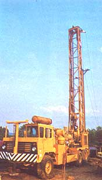
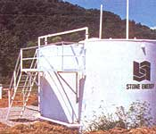
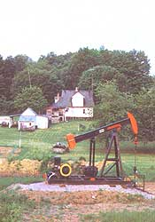
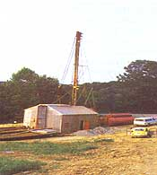

Are you eager to achieve financial freedom or energy independence? Perhaps you should . . .
Even in the midst of the currently ballyhooed worldwide oil glut, American petroleum companies continually explore and develop new oil and gas reserves. Because of this, private landowners can often cash in on those geologic commodities by agreeing to lease some of their property for exploration and drilling purposes . . . assuming, of course, they own the mineral rights to their land.
Not surprisingly, there are significant advantages and disadvantages to such a proposition. The potential pluses may include substantial income (and even free natural gas!), while some of the possible drawbacks are tide-up land and visual-or other-pollution. And the best way to determine whether the benefits of leasing acreage will outweigh the costs is to become familiar with the procedures of the oil and gas companies . . . before signing on the dotted line. In the following paragraphs, then, I'll attempt to outline just what can be expected in a standard leasing endeavor.
THE AGREEMENT
As with most other contractual agreements, an oil and gas lease is a binding document covering a specified time, price, and set of conditions. The contract states that the owner willingly allows the energy company (or well operator) access to his or her property and gives its representatives the right to prepare the site as needed and to drill and produce any oil or gas thought to be present.
In return, the well operator agrees to pay the landowner a specified "rent" for each acre leased, plus a share in the profits of the well if it begins producing oil and/or natural gas.
THE RANGE OF COMPENSATION
The conditions and financial arrangements for leases will vary, depending on factors such as the geographic location and the number of productive wells in the surrounding community. (The greater the chance of locating oil or gas, the higher the "per acre" price.)
As a rule of thumb, the amount paid for leasing rights in the eastern United States is anywhere from $5 to $25 per acre yearly. In high-production areas where there is a lot of drilling activity (the West Virginia border is one example), prime acreage can bring $50 to $75 per acre.
In Texas and the Southwest, the annual amount paid is usually between $50 and $75 per acre, with prime acreage going for $200 or more. Prices vary greatly in the Rocky Mountain region, though . . . from as little as $10 per acre in unexplored locations to as much as $1,000 per acre in proven high-production areas.
Since "rental fees" are so localized, an interested landowner who wants to make sure he or she will get a fair deal should tour adjacent counties and speak to current leaseholders to find out the amount of drilling being done in the region and the price being paid.
SHORT VERSUS LONG TERM
Of course, the length of the lease also affects the amount of compensation the owner can expect to receive. The shorter the lease, the less the payment. By the same token, the longer you agree to tie up your land, the more rent the well operator will be willing to pay.
Generally speaking, the smaller, independent petroleum companies are often able to move in and drill a well more quickly than the larger corporations can, so they're usually more willing to accept a shorter lease (for six months, one year, or two years). The major oil companies, however, tend to be more interested in larger blocks of land and longer leases . . . in order to allow them plenty of time to conduct seismic and geomorphic work before drilling. Either way, if a lease expires before the well operator has completed an exploration program, he or she must negotiate a new one. This is because the oil and gas rights revert back to the landowner once a lease ends . . . unless a successful well has been drilled.
Note the implications of that last phrase. It means that if a well has been completed and is producing by the time the lease expires, the operator owns the rights to extract from that well for as long as it remains productive (which, most of' the time, is from 10 to 20 years).
SHARING THE PROFITS
On the average, a landowner receives a one-eighth interest in a producing well drilled on his or her property. In highly competitive, very productive areas, he or she may get a three-sixteenths share, or perhaps even a one-fourth interest on the well. Such fractions can add up to a significant income.
For example, based on the current price of $29 per barrel of crude oil, the landowner with a one-eighth interest on one well could expect to receive about $3.60 for every barrel of oil produced (a barrel equals 42 U.S. gallons). Considering that the average well in the U.S. produces about ten barrels of oil a day (and that estimate is conservative), the landowner would pocket a monthly royalty totaling $1,080!
In addition, if the lease involves a large tract of land, the well operator may initiate a multiple-well program that would entitle the owner to a monthly royalty check for each successful well. (On the other hand, of course, a well driller may just as likely come up with nothing but dry holes, in which case the landowner would receive no compensation beyond the original "per acre" lease fee.)
OTHER POTENTIAL PERKS
Homesteaders seeking greater self-sufficiency might consider a common fringe benefit of drilling more desirable than the cash rewards. In the event a successful well taps into a natural gas reserve, the landowner can divert some of the gas flow into his or her home for heating and cooking purposes, so long as a clause to this effect has been written into the lease. It's easy to see how the thought of a 10- to 20-year supply of free natural gas can be a very appealing incentive to homeowners (especially with today's escalating utility costs!).
THE FLIP SIDE
Although such prospects are alluring, there are definitely several disadvantages to consider before you rush into an agreement with the first oil company you find. It's important to remember that leasing your property-whether it be 5 acres or 500-essentially means "sharing" the land . . . a situation which may or may not fit into your long-term plans for the property. True, it's hardly likely that the surrounding acreage must sit idle while a small tract is being drilled upon. Still, that land may be disrupted at any time by exploration and developmental activities.
Building an access road may be the first disturbance. The driller will use dump trucks, bulldozers, and other excavating equipment to construct a roadway to the well site . . . removing trees, topsoil, vegetation, and other ground cover in the process. The driller may then elect to haul in gravel, or may just use the existing subsoil as a roadbed.
The number of trees you'll lose will depend on your land and on the length of the access road and its proximity to the well site. The workers will either cut the trees down with a chain saw or simply uproot them with a bulldozer. The landowner, though, can claim all the cut timber from his or her property . . . provided that's been written into the contract.
Further work will be done at the well site. Preparation before drilling includes leveling the terrain so that the rig can sit flat on a cleared spot and digging a holding pit for the used drilling fluids (which include salt water and drilling muds).
Moreover, unless all this excavation is done properly, soil instability and erosion problems may result. These-if left unchecked-can create trenches and channels that accelerate the washing away of the soil's vital nutrients.
Other possible, though infrequent, complications include seepage of drilling fluids into nearby streams and water wells . . . oil spills . . . and injuries to humans and animals (either through direct contact with the equipment or by contamination of water supplies and vegetation).
Then too, once the drilling is completed, production equipment such as pumping units, storage tanks, valves, and fittings will have to be secured in place at the site for the entire life of the well. The constant noise of that pump engine sucking up the oil, and the visual incongruity of the oil-field equipment may be bothersome to both you and your neighbors.
THE AFTERMATH
In almost every state, a well operator is required by law to restore a drilling site to its original condition, or as close to it as possible, once the drilling is completed. This includes cleaning up the site, recontouring the terrain, and replanting vegetation. Though most operators try to do a good job, a problem still remains with those few others who'll shrug of their responsibilities and do the least possible amount of restoration.
You can help prevent problems by staying abreast of the well operator's activities . . . and by questioning the drillers during each phase of the operation. The more informed you can be about what's taking place on your property, the better off you'll be.
The best way to protect yourself from a disreputable oil and gas operator is by requesting the names of other people from whom the driller has previously leased property, and then by traveling to those locations to witness firsthand the extent to which the land has been restored. Try to discuss the operator's credibility with those owners before you agree to hand over your holdings to that driller. Thoroughly checking the operator's reputation is the most reliable way to avoid getting stuck with a sour deal hidden in a sweet wrapper.
If all signs point to "go", however, then you might be able to cash in on an often overlooked benefit of country living . . . income from oil and natural gas rights.
|
 Mobile rotary rigs are driven to the well site and are usually self- contained. The rig's drill bit rotates as it drills the well. |
 Storage tanks or ""batteries"" hold the crude oil until the transport trucks can haul it to the refinery. In high-activity areas, pipelines carry the crude to its destination. |
 A productive well may be literally ""in your backyard""; depending on the region's geology. |
|
 Cable-tool rigs are still used in shallow well areas. These rigs use a pounding motion to drive the pipe into the ground. |
|
|